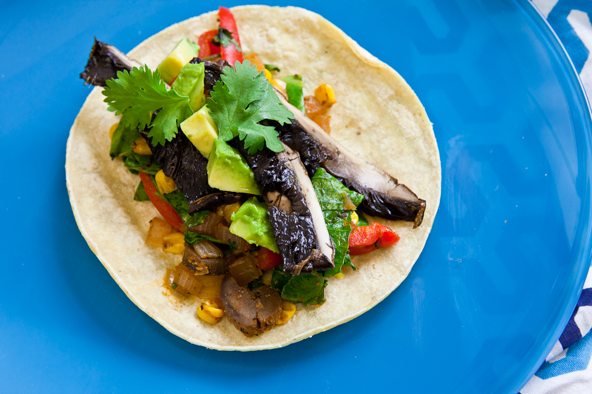

Vegetarian Tacos

Meatless Tacos Recipe
Here is how to make the perfect vegetarian tacos. You won't miss the meat.
Ingredients
- 1 small onion
- 1 med green pepper
- Portobello mushroom
- Soft Tortillas
- Canned black beans
- Chilli powder and cumin
- Shredded cheese and hot sauce for topping
- Salt and pepper
Steps
- Slice onion, green pepper, and portobello mushroom
- Cook veggies until tender.
- Drain canned beans and set aside.
- Season veggie with chilli powder and cumin.
- Warm up tortillas.
- Assemble tacos with cooked veggies, black beans, and whatever toppings
Home